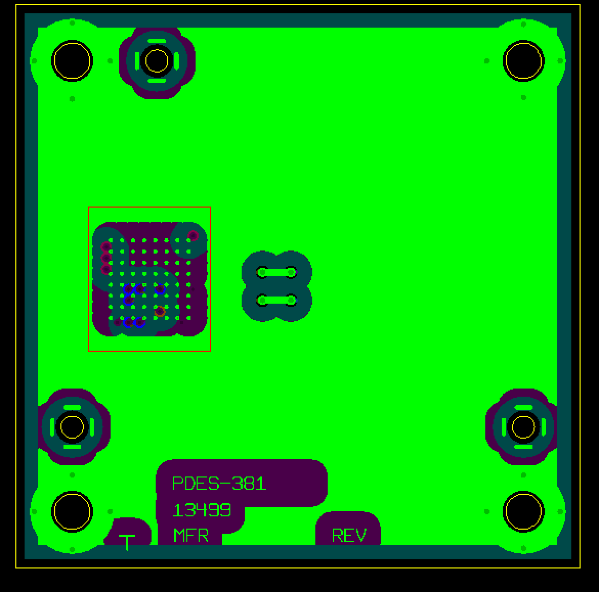
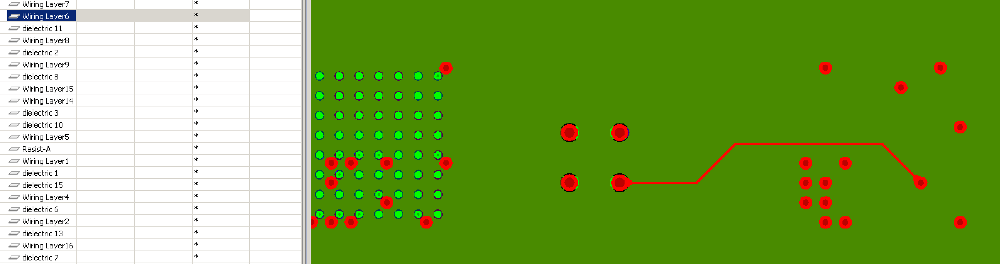

Title:
A printed circuit assembly with top and bottom side BGAs, and a multi-layer modern printed circuit board.
Primary test case scope:
This test case is a modern printed circuit board and printed circuit assembly released by Rockwell Collins to PDES Inc., for testing AP 210 (ISO 1033-210) interfaces to CAD systems.
Description:
This test case was originally created to evaluate realization of tie bars between different nets with the same dc potential. The design model requires special "tie-bar" pseudo-components in the circuit board data set as one copper feature cannot have two net names. The test case was expanded to include through-hole and blind vias. There are no buried vias in the design. This test case is a sixteen layer board with a ball grid array on top and one on bottom. It is a square board. Both signal and power and ground layers are provided.
overview figure:

Figure 1: Primary Surface View
Author:
Rockwell Collins Inc.,
Filename:
PDES-181-for_410_ed2.stp
Design Source:
CR5000 Board Designer to CADIF
Source Schema name
AP210_ELECTRONIC_ASSEMBLY_INTERCONNECT_AND_PACKAGING_DESIGN_MIM_LF { 1 0 10303 410 1 1 4}
Source Schema Date:
N/A
Validation Schema Date:
N/A
Validation Schema name
AP210_ELECTRONIC_ASSEMBLY_INTERCONNECT_AND_PACKAGING_DESIGN_MIM_LF { 1 0 10303 410 3 1 4}
Validation Schema date:
Mon Mar 24 10:53:49 2014
Validation Schema version:
3
Recommended Practice Reference:
NA
Pre-processor:
Zuken/Visula (CADIF/DTI) -> AP210 converter v3.4, using JSDAI. Build 270
time stamp
2009-10-16T16:42:18
Post-processor:
PREVIEW reader version x.ss
Post-processor time stamp
tbd
PostProcessing:
NA
Test Purpose:
The purpose of this test is to evaluate PREVIEWs ability to support the
"technical trouble shooting" use case.
Test procedure clause 1:
trace 1
Install PREVIEW
Start PREVIEW
Load the file identified above in the test case filename clause.
trace "net1" through the circuit board.
Verdict criteria:
Design loads successfully
Manufacturer, Design part number and rev are displayed in menu bar at top of PREVIEW.
"net1 is found on following layers: x, y, z, ....
"net1" is attached to the following terminals : "U1-xx" "
Figure 2: layer 1 View

Figure 3: layer 6 View
Figure 4: layer 13 View
Test procedure clause 2:
trace 2
trace "net2" through the circuit board.
Verdict criteria:
Design loads successfully
Design part number and rev are displayed in menu bar at top of PREVIEW.
"net2 is found on following layers: x, y, z, ....
Testing History:
Date:
description
Issues
N/A
validation properties
NA
Evaluator
name
Acknowledgement
This test case structure is derived from the PDES Inc., electrical project test case template.